徐斌
“进”和“退”是一对反义词。然而，两者并不矛盾。在战争中，“以退求进”、“以屈求伸”的战略正体现了退与进、屈与伸的辩证关系。从某种意义上说，“退”是“进”的准备和基础，“进”是“退”的发展与提升。在课堂上，“进”与“退”体现的是一种行云流水般的从容节奏。因此，游刃于“进”与“退”之间是数学教学艺术的一种理想状态。
首先，退到学生的生活经验。数学知识常常来源于现实生活。荷兰数学教育家弗赖登塔尔从数学教育的特点出发，提出了“数学现实”的教学原则，即数学来源于现实，扎根于现实，应用于现实。在教学过程中，老师如果能充分利用学生身边的生活现象引入新知，让数学教学符合生活实际、充满生活气息，会使学生对数学有一种亲近感，感到数学与生活同在，数学并不神秘，由此激起学生探求新知的强烈愿望，调动学生学习数学的积极性，使学生成为真正“自主的思想家”。
其次，退到学生的旧知。利用学生的旧知来引进新知是一种类比迁移的策略。什么是类比？类比是一个形式逻辑的概念，就是类似比较。迁移是教育心理学的概念，就是将已学过的旧知和与之相联系的新知比较，使学生通过复习旧知识更快地学会新知识。美国心理学家奥苏贝尔说过，影响学生新知学习唯一最重要的是——“学生已经知道了什么”。可见，上课的开始阶段安排适当的旧知复习，能再现学生认知结构中的相关知识经验，激活新、旧知识之间的联结点，为新课学习做好铺垫。复习旧知识较之直截了当地讲述新知识，尽管形式上是退了，但学生更容易获得新知识，实际是一种进。
第三，退到学生的思维起点。数学教学是数学思维活动的教学，小学生的数学思维发展遵循着从形象思维到抽象思维过渡的规律。为了使学生的思维得到有效发展，老师在学习新知之初就应该为学生的思维发展寻找合适的起点。对于不同年级的学生，教师应根据其年龄特征寻找适宜的思维方式：低年级的学生可以多一些操作和活动，以引发动作性思维；中年级的学生可以充分利用表象的作用，不断引发形象性思维；高年级的学生可以不断引导其归纳和概括，以逐步发展学生的抽象性思维。
首先，进到学生的认知结构。数学教学的本质是学生在教师的引导下能动地组建认知结构并使自己得到全面发展的过程。知识只有形成结构，才具有稳定性和系统性。单一的知识只是散落的珍珠，而结构化的知识才如同美丽的珍珠项链。怎样帮助学生组建完善的认知结构，是我们在数学教学中研究的关键问题。认知结构由于是以一定的思维方式为指导构建起来的，所以其本身蕴涵着思维方法。我们在教学数学知识时，不能只停留在表面，而要提示知识所蕴涵的方法和思想，提高学生的分析、比较、归纳、概括、推理等能力。
其次，进到学生的思维深处。“数学是思维的体操。”启迪学生思维，发展智力，培养能力，建立良好的智能结构，是课堂教学的重要目标。这就要求我们教师在教学实践中，要充分利用课堂中的生成资源，并善于交给学生思维的主动权，让学生在教师精心设计的问题情境中积极地观察、思考、发现、探究、创造，使学生的思维得到有效发展。在课堂学习的过程中，要能够做到层层递进、步步深入，学中求变、练中求活，鼓励学生创新求异，对学生的新发现、新观点、新见解能及时给予肯定，排除思维定势的影响，促使学生思维向纵深发展。
第三，进到学生的实际应用。数学只有应用于实际，才会变得有血有肉、富有生气，才能真正让学生体验到学习数学的意义和价值。作为数学老师，我们要避免从概念到概念、从书本到书本，应该善于变数学练习的“机械演练”为“生活应用”。通过实际应用，引导学生用数学的眼光观察、分析、解决生活中的实际问题；通过在生活中应用数学，增强学生对数学价值的体会，强化学生应用数学的意识。
总之，在数学教学中，教师要善于处理好“进”与“退”的关系。所谓“退”，就是教师要敢于在学习的起始阶段退一步，帮助学生寻找新知学习的生长点；所谓“进”，就是教师要善于在学习的动态过程中更进一步，探寻所学知识的数学本质。
数学教学的智慧就在于教师能在“进”与“退”之间游刃有余。
课堂智慧
从简单出发，向本质迈进
——“分数乘法实际问题”教学设计
【教学内容】
义务教育课程标准实验教科书（苏教版）六年级上册第83页例2、“练一练”以及练习十六的相关习题。
【教学目标】
1.使学生理解用分数乘法解决一些稍微复杂的实际问题的方法，能够借助于直观形象的操作活动（画线段示意图）分析数量关系并体会解题思路。
2.在解决稍微复杂的分数乘法实际问题的过程中，进一步体现算法多样化思想，增强学生的数学应用意识。
3.在运用已有知识和经验解决实际问题的过程中，发展思维能力，进一步体会数学知识之间的内在联系与价值，从而提高学生对数学学习的兴趣和学好数学的信心。
【教学过程】
（在师生谈话中逐步出示课题：分数实际问题）
1.提问：分数的意义是怎样的？例如
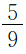
，可以表示什么意义？2.由 这个分数你能想到什么？（教师结合学生的回答进一步提问1- 的含义）
3.举例：“其中男运动员占 ”，表示什么意义？（教师板书）
补充成：“岭南小学六年级同学参加学校运动会，其中男运动员占 ”，从中你能知道什么？
再补充成：“岭南小学六年级有45名同学参加学校运动会，其中男运动员占 ”，从中你又能知道什么？能直接求出什么问题？（男运动员有多少人？）
（教师结合学生的回答板书出45× ）为什么用乘法计算？（求一个数的几分之几用乘法）
［心理学思考］上课伊始，教师开门见山地揭示课题，通过几个关联性问题让学生复习了分数的基本意义，并联系实例初步理解了 和1- 的实际意义，以及分数乘法45× 的简单应用。这样的复习与铺垫看似简单，实则对本课新知学习所需要的相关旧知进行了具有针对性的复习，激活了学生原有认知结构中可利用的经验，为接下来有效学习稍微复杂的分数乘法实际问题打下基础。
例：岭南小学六年级有45名同学参加学校运动会，其中男运动员占 。女运动员有多少人？
学生完整读题后，教师提问：
（1）题目中的已知条件和所求问题分别是什么？
（2） 表示什么意义？把什么看作单位“1”？
（3）能一步求出女运动员有多少人吗？
提问：只看抽象的文字来分析数量关系，你感觉怎样？
如果画线段图的话，你想先画什么？（教师先画出一条线段）
你能自己试着画一画吗？（学生在课本上完成线段图）
在实物投影仪上展示学生画的线段图并讲述思路。（教师在黑板上逐步补全线段图）
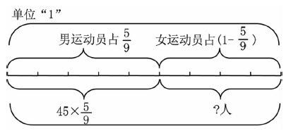
提问：要求女运动员有多少人，可以先算什么？
学生尝试列式解答。（教师指名到黑板上板演）
学生可能出现的几种典型解法：
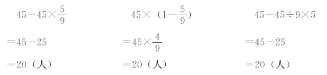
请学生分别说出列式的理由和解题的思路。（教师在对应线段图上标注）
提问：这几种解法有什么相同点和不同点？
指出：相同点——前两种解法都用了分数乘法和减法，第三种解法是整数运算。
不同点——第一种解法是先算男运动员的人数，再用总人数减男运动员人数，得到女运动员的人数；第二种解法是先算女运动员占总人数的几分之几，再用单位“1”的量乘这个分数，得到女运动员的人数；第三种解法和第一种解法类似，只是用整数列式。
［心理学思考］新课例题的出示，由复习铺垫的旧知变化而来，使得学生觉得新知不新，让学生在不知不觉中开始了新知的学习。新课的学习过程分四步进行：首先依据题中呈现的文字信息进行初步分析，了解已知条件和所求问题，理解关键信息“男运动员占
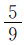
”的实际含义，并提问“能一步求出女运动员有多少人吗”，为新知生长提供了必要的固着点；然后采用数形结合的方法，让每个学生动手画线段图，借助于直观形象的图示理解数量之间的关系，引发学生的解题思路；接着让学生根据先前的分析和图解尝试列式解答，并展示几种典型的解法；最后在比较几种解法的异同中小结解题方法，初步构建起运用分数乘法和减法解决实际问题的模型。这样的新知学习过程，顺应了学生的认知心理规律，能发挥学生的动作思维、形象思维和抽象思维的合力，初建了认知结构。（看线段图，列出算式，解释思路）
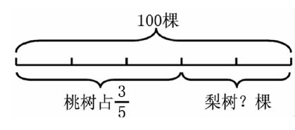
学生可能出现的列式主要有：100-100×
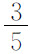
或100×（1- ）。（如果学生有需要，可以先画线段图，再分析列式）
学生从教科书上的“练一练”中，选择一道题列式解答，然后展示评价学生的算法。
（1）李林看一本150页的故事书，已经看了全书的
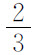
，还剩多少页没有看？（2）学校饲养组养白兔和黑兔共28只，其中白兔占
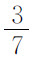
，黑兔有多少只？（只列式不计算，列式后进行相关比较）
（1）一堆煤20吨，运走
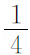
吨，还剩多少吨？列式为20- 。（2）一堆煤20吨，运走 ，运走多少吨？列式为20× 。
（3）一堆煤20吨，运走 ，还剩多少吨？列式为20-20× 或20×（1- ）。
（4）一堆煤20吨，运走一些后，还剩 ，还剩多少吨？列式为20× 。
（5）一堆煤20吨，运走一些后，还剩 ，运走多少吨？列式为20-20× 或20×（1- ）。
结合学生的列式提问：为什么第（2）题和第（4）题列式是一样的？为什么第（3）题和第（5）题列式也是一样的？
（1）补充条件。
苏州园区科文中心上映电影《变形金刚》，共有300张票，______。还剩多少张票没卖完？
（2）补充问题。
阳澄湖蟹庄计划销售大闸蟹1400千克，结果第一个月销售了计划的
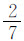
，第二个月销售了计划的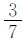
，_______？1）学生可能补充的问题有：
①第一个月销售多少千克？或第二个月销售多少千克？
②第一个月比第二个月少销售多少千克？或第二个月比第一个月多销售多少千克？
③两个月一共销售多少千克？
④还差多少千克可以完成计划？
2）学生补充问题后相应出现的列式情况可能有：
①1400× 或1400× 。
②1400× -1400× 或1400×（ - ）。
③1400× +1400× 或1400×（ + ）。
④1400-1400× -1400× 或1400-（1400× +1400× ）或1400×（1- - ）。
［心理学思考］课程改革后的教材中“解决问题”这部分不再单独成块编排，而是结合“数与代数”等知识教学分散出现。教师如果不能整体把握教材的前后联系，教学中就容易出现就题论题的现象。初建解题模型后，需要让学生在有序的练习中巩固新知、形成技能、发展思维。这部分练习，教师设计了“基本训练”、“分组练习”、“对比练习”、“补充条件”、“补充问题”等环节，引导学生在实际应用中对比、深化，归纳出解答稍微复杂的分数乘法实际问题的关键所在，从而将零散的知识“串联”、“结网”，并进一步拓展提升，形成认知网络体系。
总结（略）
作业是教科书上“练习十六”的1、2两题。
【全课反思】
本课在教学设计上力求体现数学无痕教育的思想，突出表现在以下两个维度。
为了让学生在不知不觉中开始对新知的学习，教师在上课伊始并没有直接出示例题，而是和学生谈心：“分数的意义是怎样的？例如
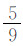
，可以表示什么意义？”“由 这个分数你能想到什么？”看似简单、随意的谈话，其实是让学生回顾之前学习的分数意义的旧知，并通过一个分数例子让学生把对分数意义的理解“外化”为具体模型，从而再现分数的本质含义，为新知介入提供良好的生长点。接下来的教学更是顺着刚才的谈话和回忆，进一步思考“1- 的含义”，并在学生熟悉的校园运动会情境中逐步出示：“其中男运动员占 ，表示什么意义？”“岭南小学六年级同学参加学校运动会，其中男运动员占 ，从中你能知道什么？”“岭南小学六年级有45名同学参加学校运动会，其中男运动员占59，从中你又能知道什么？”至此，随着已知条件信息的不断呈现，学生对题意的了解逐步深入，并运用已学的一步计算的分数乘法解决了实际问题。这样的复习铺垫和逐层引入，看似平常，其实符合儿童学习的心理规律，即由旧知到新知，由简单到复杂，由零散到整合。这样的设计起到了“先行组织者”（奥苏贝尔提出的一种提高教材可懂度的技术）的作用，是对教材的组织和呈现方式的有效改进，有助于为新的学习提供必要的准备知识，更有助于促进学习的正向迁移。数学教学的理想状态是通过学习使学生走进数学本质，进而通过数学学习使学生学会思维。本课在设计学生新知学习的过程和练习巩固的层次方面，力求体现以上观点。首先，在新知的建构过程中，教师没有直接让学生列式解题，也没有完全由教师直接讲解过程，而是精心设计了逐步深入的学习进程：理解题意→画图分析→尝试列式→比较异同→反思解法。这样的学习过程，通过对学习内容的探索、经历、反思与回顾，让学生进一步体验现实生活中有关稍微复杂的分数乘法实际问题的解决过程，感受解决问题策略的价值，积累解决问题的经验，鼓励学生从不同角度、用不同思路自主探索，倡导解决问题策略的多样化。学生在与他人的合作、交流过程中，共享解决问题的思维成果，思维的灵活性培养得到加强。同时，由于借助了几何直观，让学生直观理解不同解法的方法依据，从而对这类稍微复杂的分数乘法实际问题有了感性基础和理性认识，初步形成完整的认知结构。其次，在练习巩固中，循序渐进地设计了新知不断结构化的发展过程，并通过题组对比练习和综合应用练习，引领学生逐步向着本质迈进。例如在“对比练习”中，呈现一组类似的已知条件和所求问题信息，学生通过比较发现，相同的列式源于不同的情境，相同的情境产生不同的列式。学生在分析和比较中对运用分数乘法解决实际问题累积了更丰富的感性经验和理性思辨。最后的“综合练习”，通过补充条件和补充问题，针对学生的学习差异，设计了个性化和弹性化的学习要求，让每个学生都能在自己的学习基础上有所发展和提升，使每个学生都能走进数学本质，走向理性思维。
从简单出发，向本质迈进，其实就是数学无痕教育观中的“退”与“进”的艺术体现。从简单出发，是一种“退”，退到学生的认知基础和生活经验，退到学生的思维起点和数学现实；向本质迈进，是一种“进”，进到学生的认知结构和问题解决，进到学生的思维深处和应用策略。“退”与“进”的过程，是学生在潜移默化中掌握知识技能的过程，也是学生在不露痕迹中培养思维能力的过程，更是学生在淡墨无痕中感悟数学思想的过程。